Use Curation Module¶
1. Data preparation¶
Organize your image data into directories as the following:
Raw image directory
Contains your original microscopy image data
Accepts:
.tiff,.ome-tiff,.czi
Segmentation 1 directory
Contains your segmentation of the structure of interest
Accepts:
.tiff,.ome-tiff,.czi
Segmentation 2 directory (optional)
Contains optional complementary segmentation image data, which could be generated from the same raw image data for the same structure but using different segmentation algorithms.
It is useful when Seg 1 fails predictably in certain cases (e.g. a segmentation that works during mitosis to supplement an interphase segmentation)
Accepts:
.tiff,.ome-tiff,.czi
Other requirements
At least 4 raw images and 4 corresponding segmentation files are required. Using a larger number of images is strongly recommended to train a robust and accurate segmentation model.
The number of files should be consistent across directories
It’s important to have your raw & segmentations named appropriately for the plugin to display them correctly. For example:
AICS-13_1516_raw.tiff(raw)AICS-13_1516_segmentation_interphase.tiff(seg 1)AICS-13_1516_segmentation_mitotic.tiff(seg 2)
2. Select input data¶
After applying the “Start a new model” option with an appropriate model name, the plugin will display the Curation tab as shown below:
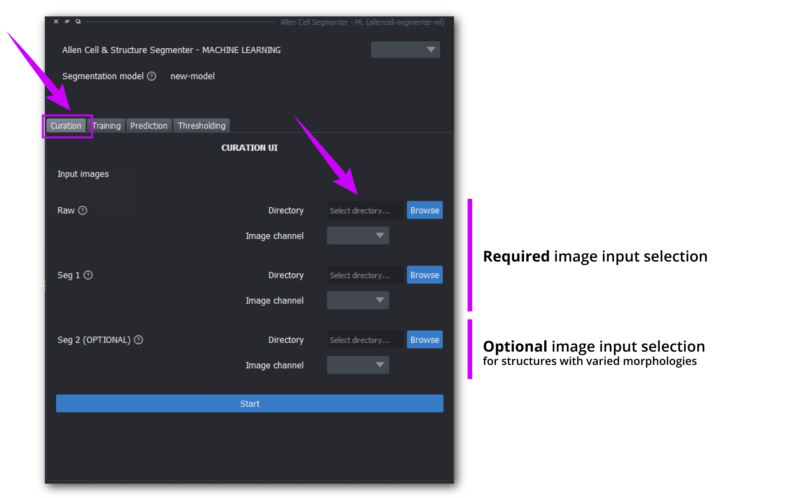
STEPS
Directory – select the directories you have prepared
Image channel – the image channel dropdown will display available channels detected in the directories you have loaded. Channel often starts at
0Click Start
3. Start curation¶
VIEWPORT
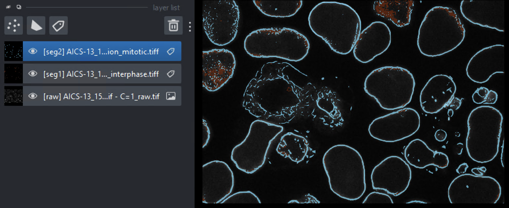
In the viewport, your images will be displayed one set at a time, with the segmentations overlaid on top of the raw image in the following order top to bottom:
Seg 2(if available):labellayer: teal colorSeg 1:labellayer: orange colorRaw:imagelayer: grayscale color
PLUGIN INTERFACE
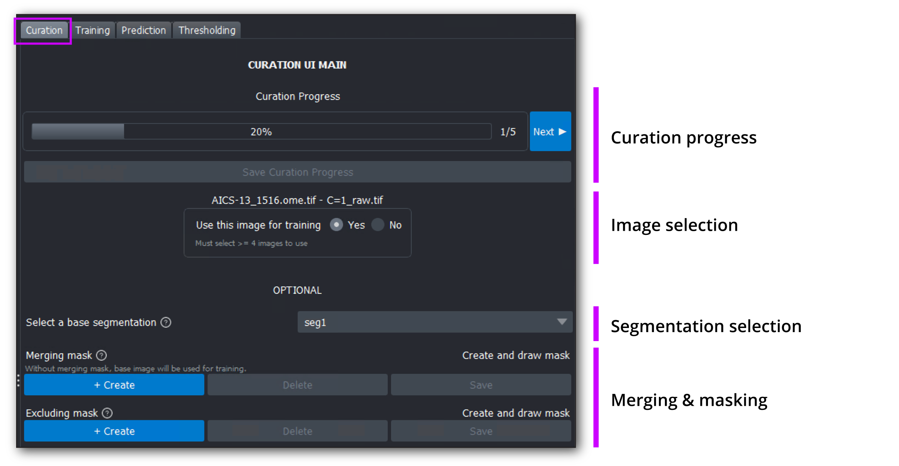
a. Sorting¶
Revisit the concept of sorting if needed
STEPS
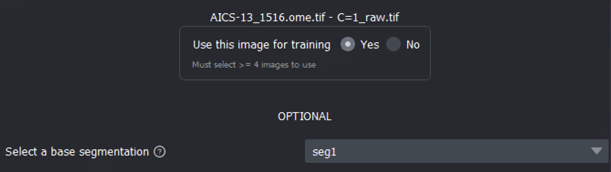
User this image for training?
Select Yes (the default selection) to use the image pair for training
Select No to skip this image pair
Select a base segmentation
Seg 1is selected by defaultif
Seg 2is available, you can choose to use eitherSeg 1orSeg 2
Click Next to proceed to the next image pair if no further action needed (e.g., excluding or merging),
The progress bar displays your current progress, and show how many image pairs you have reviewed
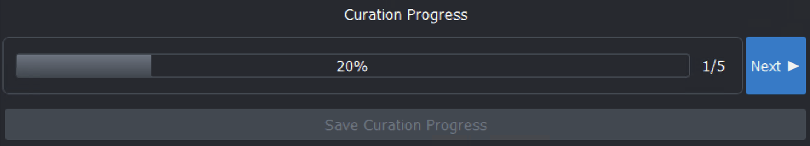
When at least 4 image pairs have been selected to use for training, the Save curation progress button will be enabled for you to save your progress
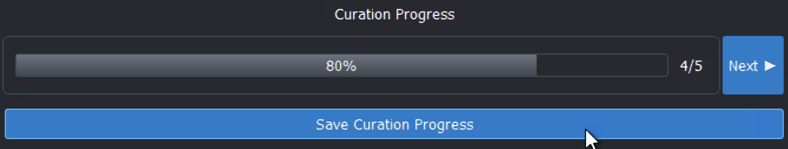
b. Create an excluding mask (OPTIONAL)¶
Revisit the concept of excluding if needed
STEPS
1. Click the Create button under the Excluding mask section
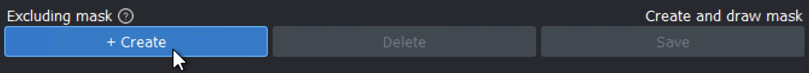
2. Your cursor automatically changes to the polygon drawing tool (cross-hair icon over the viewport)
3. Start drawing shapes to cover areas of the image you want to exclude, double-click to close the shape, and review in z using the slider at the bottom of the viewport to ensure the shapes are still appropriate
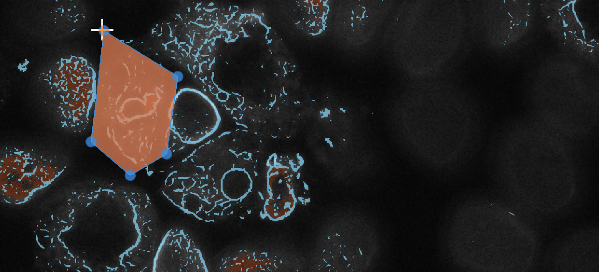
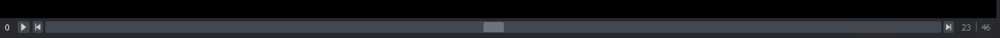
Tip
Precision isn’t critical when drawing, as long as the subpar segmentation areas are adequately covered. We aim to make this process quick, especially since there may be a large number of images for you to review.
4. When you’re finished with all shapes, click Save to save your excluding mask
5. Alternatively, if you:
no longer need an excluding mask, click Delete
wish to start over, click Delete then click Create to add a new excluding mask
Note
Each image pair will have only one excluding mask, clicking Save multiple times will resave the same mask or clicking Create multiple times will overwrite the previously created mask
c. Create a merging mask (OPTIONAL)¶
Revisit the concept of merging if needed
This function is only enabled if
Seg 2is also present in additional toSeg 1
STEPS (similar to the Excluding mask’s steps)
1. Click the Create button under the Merging mask section
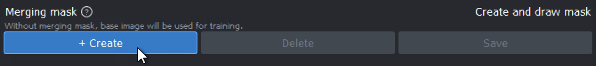
2. Your cursor automatically changes to the polygon drawing tool
3. Start drawing shapes to cover areas of the image you want to be overwritten, double-click to close the shape, and review in z using the slider at the bottom of the viewport to ensure the shapes are still appropriate
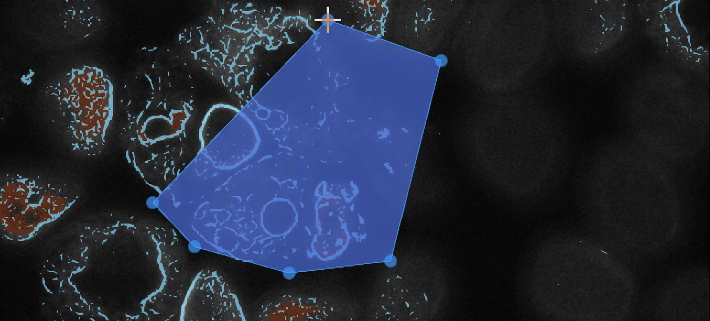
4. When you’re finished with all shapes, click Save to save your merging mask
5. Alternatively, if you:
no longer need a merging mask, click Delete
wish to start over, click Delete then click Create to add a new merging mask
Note
Each image pair will have only one merging mask, clicking Save multiple times will resave the same mask or clicking Create multiple times will overwrite the previously created mask
Warning
Merging mask and excluding mask can’t overlap each other.
4. Complete curation¶
Upon reaching the last image indicated in the progress bar
Click Finish next to the progress bar
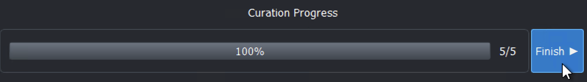
Your curation progress will be saved automatically
A dialog will prompt you to switch to the Training tab to start training
{kind=link}
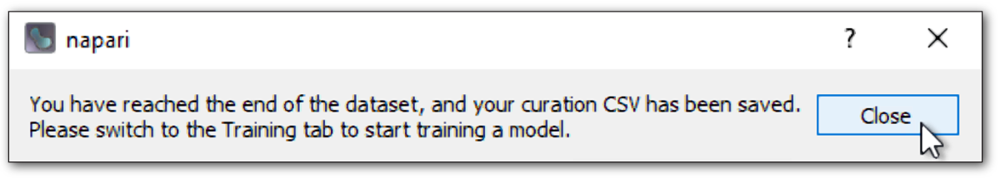
Caution
If you close the plugin while in the middle of the curation process, the plugin will not save your progress.
Your curation progress will only be saved once you have finished curating your dataset or have clicked Save curation progress.
Curation progress is saved to a CSV and can be used for training immediately once saved, but currently it cannot be used to resume curation if you exit the curation process.